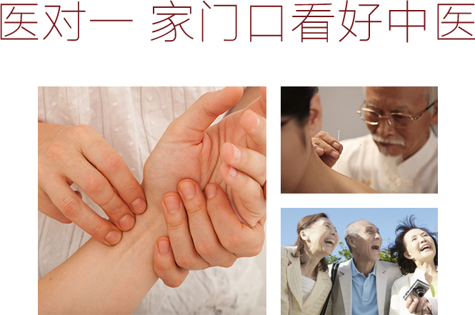

利用中医+互联网技术，致力于为社会、医生、医院构建一对一的熟人医患中医服务平台，传承发扬中医药文化，全面提升社区卫生服务中心中医服务能力，使每个居民都能享受到便捷、信任、高品质的社区中医服务。以科技创新助力分级诊疗、中医“治未病”、中医慢病管理等医疗服务管理模式的变革和创新，改善国人中医健康服务质量，同步实现提升社区中医服务能力与减少中国民众患病率的目标。
医对一的使命：提升社区中医服务能力，建立一对一的熟人医患社区中医服务平台。
医对一的愿景：让每个居民都能享受到便捷、信任、高品质的社区中医服务。
400-876-2121
北京市海淀区中关村南大街甲56号方圆公寓B座1303
info@ys121.cn